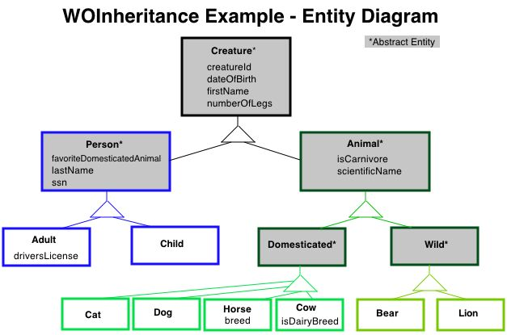
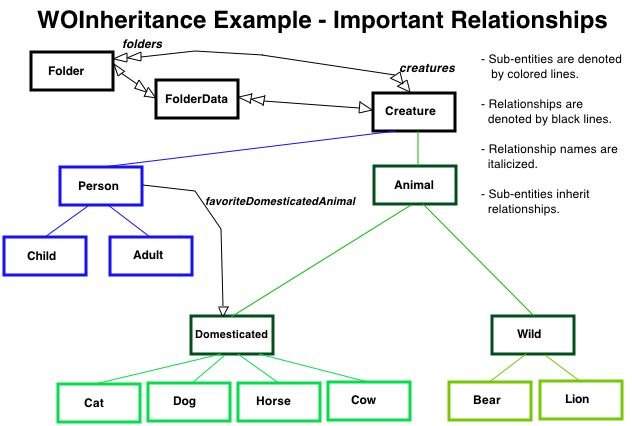
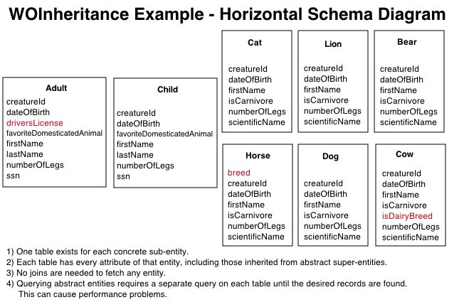
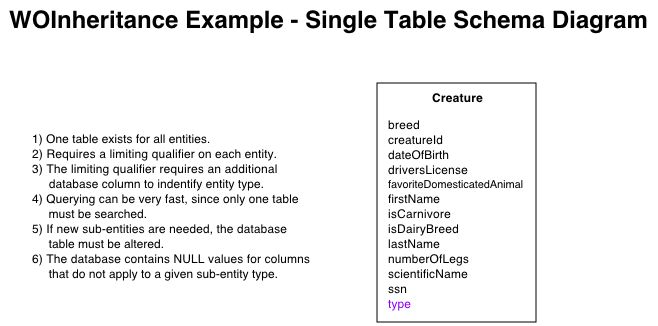
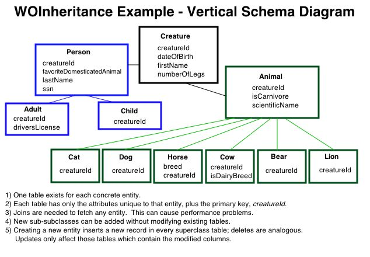

WOInheritanceExample
Difficulty Level: Advanced
Topics Covered: EOF, WebObjects
Overview:
Entity inheritance is more complex to set up and is not needed very often, but when it is, you can use
this example to better understand how it works and what to expect.
Three different styles of entity inheritance are presented: vertical, horizontal, and
single-table. The databases for each style of inheritance contain the same data to provide a good
comparison of the SQL generated to fetch inherited or abstract entities. Users select an inheritance
style from a list on the initial page of the application and add, associate, group entities as explained
below. The app itself behaves the same regardless of the inheritance style chosen - the educational
value of the example comes from studying the entity and inheritance diagrams, the EOModels, the SQL
generated by various user actions, and the structure of data in the database for each inheritance style.
Usage:
On MacOS X, launch the example by double-clicking the .woa in Finder. On Windows, in either the Bourne shell application or the Windows command shell, cd into the example's .woa directory and type "WOInheritanceExample.cmd" to launch the application. You can also run the example application from inside ProjectBuilder on MacOS X, or ProjectBuilderWO on Windows, which makes it easy to watch the SQL that is generated as the example is exercised.
The first page of the application, "WOInheritance Example - Select Model" presents a radio button list of the three inheritance styles from which to choose. Clicking one of the radio buttons and pressing "Select Model" causes the EOModel for that inheritance style to be loaded and to control the application while it is running. Backtracking to the "Select Model" page and changing the selected model won't affect the running application. To study the behavior of the app under a different inheritance style, you will have to relaunch it.
The main working page of the application, entitled "WOInheritance Example", corresponds to the FolderViewPage component. To the left of the page is a hierarchical list of folders which comprise a filing system, similar to a computer filesystem, which permits arbitrary grouping of objects in the "Creatures" hierarchy. Selecting a folder by clicking on it causes its path and contents to be displayed in the middle column of the page. The root of the Folder hierarchy is "Folders"; click the triangle to the left of each subfolder to display the subfolders beneath it.- Press the New Subfolder button to create a new subfolder beneath the selected folder.
- Select a subfolder and press the "Delete Folder" button to delete it. A confirmation panel is displayed to allow the delete to be cancelled, if desired. The root folder can not be deleted.
- To rename a folder, select it and press the "Rename Folder" button. This causes the selected folder's name to be displayed in an editable text field. Edit the folder name and press the curved arrow icon which appears to the right of the text field in order to accept the edit.
When a folder is selected, the creature objects it contains are displayed in the middle column of the page. Selecting one of these creatures causes its attributes to be displayed in the right column of the page.- To delete the selected creature from the database, press the "Delete" button at the bottom of the right-hand column. A confirmation panel is displayed before the delete is performed, allowing you to cancel the action if desired.
- Pressing the "Cancel" button at the bottom of the right column causes the selected creature to be deselected.
- To edit the database record for the selected creature, make the desired changes in the editable attributes for the creature and press the "Save" button.
Add or replace existing creatures in the selected folder with the "Add/Replace Creature(s)" button:- Pressing the "Add/Replace Creature(s)" button causes a browser list of all the existing creature objects to be displayed in the rightmost column. The creatures which are in the current folder are selected.
- To add an existing creature to the folder, hold down the Apple key and click on the creature to add, to include it in the selection. Release the Apple key and press the application's "Save" button.
- To replace the contents of the current folder with a new selection, click on any of the unselected creatures to clear the selected list. Click on a creature you want to add to the folder, then hold down the Apple key while clicking on the remaining creatures to add. Release the Apple key and press the application's "Save" button.
- To create a new Creature object and add it to the current folder, press the "New Record" button at the bottom of the rightmost column. This causes a drop-down list of concrete Creature types to be displayed, with the label "Type to Edit:". Select a type from the list and press the "Edit" button. The attributes for the selected type of creature are displayed in editable text boxes and checkboxes. The default "FirstName" attribute value is simply the full name of the selected Creature class - replace it with a suitable first name for the creature. Fill in the other attributes of the creature appropriately and press the "Save" button to create the new record.
Use the "Help" link in the lower left corner of the page to access the help text and diagrams that accompany the example.
Description:
The entities, relationships, and schema for this example are diagrammed below. Study the diagrams in conjunction with the EOModels and the SQL that is generated for various actions under the three different inheritance styles.
The relationship of Folders to Creatures is many-to-many: creatures may be in many folders, and folders may contain many creatures. This relationship between Folder and Creature entities is implemented by means of an intermediary entity, FolderData, which comprises the mapping between Folder and Creature entities.
EnterpriseObjects Framework allows the many-to-many relationship between Folders and Creatures to be "flattened", hiding the implementation details of the intermediate FolderData entity. FolderData shows up as an entity in the EOModels and as a table in the databases, but in the in application code, Folders and Creatures appear to interact directly. The flattened folders relationship must be a class property and must be on every subentity of Creature in order for cascading deletes to work properly. Deleting a Creature causes all related FolderData rows to be deleted and insures that all folders->>creatures relationships no longer contain the deleted creature.
Entity inheritance is demonstrated in the to-one relationships between FolderData and the abstract entity, Creature, and between the abstract Person and Domesticated entities. The relationship between FolderData and Creature is joined on the unique identifier creatureID. The favoriteDomesticatedAnimal relationship is joined from a foreign key stored in a Person object to the creatureID stored in a Domesticated object. The favoriteDomesticatedAnimal relationship makes use of deferred faulting.
Database Schema Notes:
There are three ways to structure the tables in the database to store the information for this or any hierarchy: a vertically, a horizontally, or in a single table. Each has advantages and disadvantages. See the EnterpriseObjects Framework documentation for further discussion on the tradeoffs in the different inheritance styles.
Vertical inheritance resembles a Java object hierarchy where the common columns are factored out and stored in a separate table. Subclasses only have in common the primary key column, plus any extra columns required for that subclass. The main disadvantage is that the deeper the inheritance hierarchy, the more database joins are needed to fetch a complete object.
Horizontal inheritance removes the joins by putting the entire set of columns needed for a given entity within the same table. This means that if you intend to have qualifiers query against abstract entities, you need to have a table for that entity, which will contain duplicated data from the subentities.
Single Table inheritance puts all the data into a single database table. This means that it is the union of every column needed to store any of the subentities. The table will have NULL values for any column that does not apply to that subentity.
Single Table inheritance requires that there be a fixed way for EnterpriseObjects Framework to know the type of entity for a row. This is best accomplished by adding an extra "type" column to the single table. Entities are given a special qualifier using the Entity inspector in EOModeler. This special qualifier defines how to fetch only the rows for the given entity from the single table. An advantage to the Single Table structure is that you can perform a single fetch and retrieve all the objects from abstract entities. (i.e., fetching all Domesticated animals will produce a SQL statement that ORs all the special qualifiers for all the subentities of Domesticated. Therefore, with a single fetch you get the rows back for any Cat, Dog, Cow, or Horse entities.) A disadvantage to Single Table inheritance is that adding another subentity requires you to alter the database table.
To load the databases into default Derby database:
The databases for this example are shipped as Derby sql files located in the top level Databases directory. There are six sql script create and insert files: inherit_singletable*.sql, inherit_horizontaltable*.sql, and inherit_verticaltable*.sql.- Launch OpenBaseManager.
-
For each database, perform the following steps:
- Run the /Developer/Examples/JavaWebObjects/installDatabases.sh script using your username as a parameter
To load the databases into OpenBase from ASCII Backup:
The databases for this example are shipped as OpenBase ASCII backup files located in the Databases directory. There are three database backup files: WOInheritanceHorizontal.bck, WOInheritanceSingleTable.bck, and WOInheritanceVertical.bck.- Launch OpenBaseManager.
-
For each database, perform the following steps:
- From OpenBaseManager's "Tools" menu, choose "Restore from ASCII".
- In the "Open" panel, select the database file to restore and press the "Open" button.
- In the "Configure Databases" panel, enter the name of the database file being restored, minus the ".bck" file
extension. Mark the checkbox for "Start Database at Boot". The remainder of the settings in this panel can be left at the default values. Press the "Set" button. The database will be created and started.
- In the main OpenBase control panel, click the triangle next to "localhost" to
display the databases available on the local host. Select the database you just
installed, and press the "magnifying glass" icon to launch the Data Viewer. The tables and data for this database should be displayed in the Data Viewer.
- If the Data Viewer does not display the database tables and data, If not, repeat the "Restore from ASCII", choosing "Use Selected Database" when prompted in the "Create New Database?" panel, then choosing "Delete Data" when prompted in the "Delete All Data?" panel.




